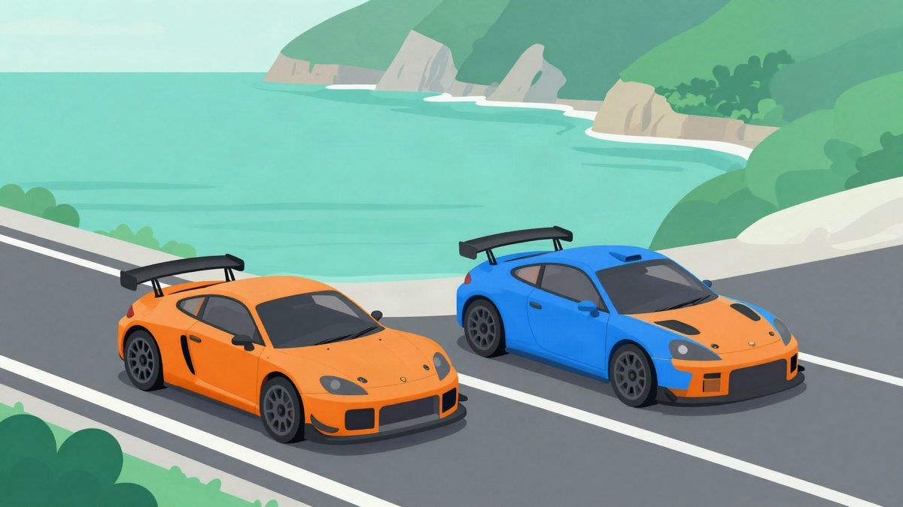

Forza Horizon 6: igrač u Drivataru susreo preminulog prijatelja, objava ima 1,75 milijuna lajkova

Instagram reel igrača Forze Horizon 6, koji je u otvorenom svijetu igre naišao na Drivatar prijatelja preminulog prije četiri mjeseca, skupio je oko 1,75 milijuna lajkova. Oglasio se i službeni račun Forza Horizona, a mnogi su podijelili slične priče iz drugih igara.
Instagram objava igrača Forze Horizon 6 postala je viralna. Korisnik samohteht.fh 14. studenoga objavio je reel u kojem u igri susreće Drivatar prijatelja koji je umro prije četiri mjeseca. U trenutku pisanja objava je imala oko 1,75 milijuna lajkova.
Na videu igrač u otvorenom svijetu naiđe na automobil korisnika Mabel1411, neko vrijeme vozi uz njega, a zatim ga izazove na utrku. Autor objave kaže da je riječ o Drivataru njegova preminulog prijatelja, da se u igri povremeno susretnu i da mogu ponovno voziti zajedno. Napisao je da nema potrebe za riječima, oproštajima ni tugom, samo dvojica voze jedan do drugoga kao da se ništa nije dogodilo. Dodaje da mu se na trenutak čini da je sve kao prije, iako zna da je to samo igra. Objavu je zaključio čestitkom za rođendan i porukom "Nedostaješ mi, brate", pa je vjerojatno objavljena na dan kad je prijatelj trebao slaviti rođendan.
Uz brojne komentare podrške oglasio se i službeni račun Forza Horizona. Izrazio je sućut i napisao da je i njima posebno važno što sjećanje na prijatelja može živjeti u igri i što se može zajedno voziti. Mnogi su objavu usporedili s pjesmom See You Again iz filma Furious 7, nastalom u spomen na Paula Walkera.
Što je Drivatar
Drivatar je AI funkcija serijala Forza, prisutna od prve Forze Motorsport iz 2005. Uči stil vožnje, navike i omiljene automobile igrača. Od Forze Motorsport 5 iz 2013. Drivatari se mogu dijeliti putem interneta, pa se može utrkivati protiv AI vozača naučenih na stilu prijatelja. U Forzi Horizon 6 pojavljuju se u solo utrkama, a kad igrač u otvorenom svijetu prijeđe u solo mod, voze po karti.
Slične priče
Objava je potaknula sjećanja na ranije slučajeve. Najpoznatiji je komentar korisnika 00WARTHERAPY00 iz 2014. ispod YouTube videa o videoigrama kao duhovnom iskustvu. Otac mu je kupio prvi Xbox kad je imao četiri godine, a umro je kad je imao šest. Deset godina nije dirao konzolu. Kad je ponovno zaigrao RalliSport Challenge, pronašao je očev ghost, zapis najbržeg vremena u utrci. Ponavljao je utrku dok ga nije stigao i prestigao, ali se zaustavio prije ciljne crte da ghost ne bi nestao. Komentar je dobio 31.000 lajkova, a 2016. po njemu je snimljen kratki film Player Two, koji ima 2,1 milijun pregleda.
Reddit korisnik Spartansneverdie opisao je 2016. da je u Forzi Horizon 3 na obali vidio ime prijatelja koji je godinu dana ranije umro u 19. godini. Odmah ga je izazvao na utrku, a iskustvo je opisao kao gorko-slatko.
Slične priče pojavile su se i ispod nove objave: Drivatar prijatelja preminulog prije više od osam godina, majčin Mii koji je i dalje u Wiiju te ribolovno mjesto koje je preminuli prijatelj izgradio u Minecraft svijetu starom sedam godina. Riječ je o izvješćima korisnika, a ne o provjerenim podacima.
Forza Horizon 6 smještena je u Japanu i dostupna je na PC-ju (Steam i Microsoft Store) te na Xbox Series X|S, a uključena je i u Xbox/PC Game Pass. Verzija za PS5 izlazi 27. siječnja 2027.
Izvor: Automaton (JP)